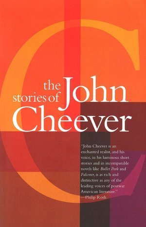

Saturday, January 13th
It's not 10 things, and it's not once a month, but I am here with a sporadic post about things that have occupied my time recently.
-
I've recently graduated from a crochet hook to a sewing machine. Living in a hellscape of sleeves that are too short and pant legs that hit at the ankle, paired with encouragement from some crafty people, has helped make this transition possible.
My goal is to be learn to make clothes that will last longer, and get more wear.
Some beginner projects:
GARB by Nush
A slow death to fast fashion and ill-fitting clothes, one sewing project at a time!
Special thanks to:- Mrs. Suchanek for donating the sewing machine
- Pearl for sewing inspiration and guidance (mastermind behind @repurposefullyclothed)
- All of sewing youtube
-
Youtube Shorts (no shame) has introduced me to PublicOpinionNYC- Trackstar. This street quiz show offers a contestant $5 for correctly guessing the artist of a song. Each correct answer offers a chance to go double or nothing by playing an additional round.
It is gen z version of music Jeopardy with a commendable music selection.
Some recent episode favorites: All Along the Watchtower by Jimi Hendrix, TOOTIMETOOTIMETOOTIME by The 1975, and So Hot You're Hurting My Feelings by Caroline Polacheck. - My brother and his fiancée are new parents to the best pup, Tikki. She is afraid of vacuums and likes biting toes but she knows not to.
-
Reading:
Stories by John Cheever (Rating: 4/5)
John Cheever is a famous short story writer known for his work about the lives and morals of middle class suburbia in the 1900s (disturbia!). This was a book club read that I didn't expect to enjoy as much as I did. Of the stories I read from this collection, most of them end in an unexpected flair. They unfold unassumingly until the end, where a subtle revelation piques the reader's curiosity. This development is intriguing enough to prompt delving into another short story to explore where it might lead.
His most popular short story is The Swimmer but these were a few favorites of mine:
Remains of the Day
This one starts slow, immersing the reader in a comprehensive assesment of life as a 1920s English butler. Over the course of the novel, the author subtley ties together different threads to analyze themes of identity, nobility, and dignity. Admittedly, much of the nuance and deeper ideas of the book were lost on me until I reached the end of the novel (and watched the movie, which I highly recommend). It took me a bit to decide what I thought about this one, but by the end of it, a solid 5/5. - Some have said the first step to becoming a modern day Muhammed Ali is playing with this hand eye coordination punching ball. I wasn't sold until I saw it in action, so the closest experience I can provide is this potentially embarassing video.
- Viking Chess: Ikea is not the only gem to come out of Sweden; Kubb is a lawn/beach game that involves two teams knocking down their opponents' wooden blocks by throwing wooden dowels at them. Once all the opponents' blocks have fallen, the team must topple the king piece. Legend claims vikings used to play the game with the bones of their fallen enemies, and now, I hope it rivals Bocce at retirement homes across the United States.
- A comedy set and history lesson all in one entertaining viewing experience (emphasis on the comedy). Oversimplified produces succinct, animated Youtube videos that detail major historical events, such as WW2, the rise and fall of Napoleon, and the Cold War. This channel is significantly better than much of primetime television.
-
Super Pumped: The Battle for Uber -
A seven episode television series based on a book with the same title by Mike Isaac. This TV series casts Robin (Joseph Gordon-Levitt), Coach Taylor (Kyle Chandler), The Bride (Uma Thurman), and a few other big stars to explain the dramatic and controversial events surrounding the rise of Uber, and Travis Kalanick's CEO arch in particular.
I find it difficult to determine the accuracy of 'docudramas,' but this one seemed reliable. Certain characters felt a bit like caricutures but the show was well-made and very interesting. -
Bourdieu's theory of taste:
A substack article summarizing Pierre Bourdieu’s 1979 book, Distinction: a social critique of the judgement of taste by dynomight.
This study in sociology explains a theory of how personal tastes both influence and are predicted by social class and how the relationship between these two things incentivizes people to align with tastes that represent a certain class.
Some loose thoughts if you read the post:- It is so easy to imitate taste in an online, media consumed world. Differentiating original thought/opinion is increasingly difficult
- The hypothesis on tastes applies similarly to when people talk about morals/ethics/politic socially. There is definitely a local maxima benefit to signaling certain social beliefs.
- This theory is interesting and helpful when analyzing in larger trends
- Deciphering signal/countersignal and intention on an individual level is an interesting introspective exercise but going too meta on it is futile
- Jason for the introduction to Oversimplified
- Lyle for a demo and test run of the boxing ball headband
- Elyse for the introdution to Kubb
- Anisha for the Super Pumped show recommendation
- Ishan for providing a steady stream of interesting reads, one of which was the Bourdieu article



fit check
The playing field
No better way to learn about prohibition
A thank you to